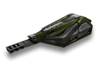
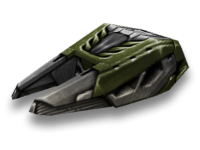
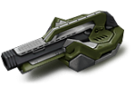
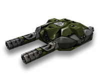
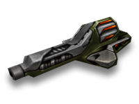
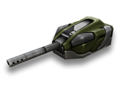
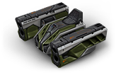
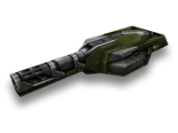
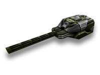
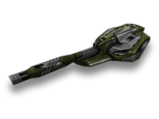

Firebird
A good weapon for short-range battle. Fires a stream of napalm that burns tanks within its damage radius. Burning opponents continue to take damage even after the Firebird's attack stops. Can thaw frozen tanks and is a great choice for fast and medium hulls.
Freeze

A unique weapon for short-range battles. Slows opponents by freezing them and can put out fires caused by Firebird. In the right hands, it can destroy an enemy without receiving any damage in return. Great for fast and medium hulls.
Isida
An essential gun in team battles. Can repair tanks within its firing radius and effectively destroy opponents at short-range. Energy stores an last for five seconds when attacking an opponent, but lasts for ten seconds when healing an ally. Works well with any hull.
Hammer
Perfect choice for close range combat. Three powerful shots mean your opponents have no way out. Its shotgun functionality allows Hammer to hit several targets with one shot at medium ranges. Works best with medium hulls.
Twins
A gun with unlimited firing duration. Effective at short to mid range. Its high rate of fire makes it ideal for supressing enemies. Works well with any hull.
Ricochet
A gun that can be tough to control. Ideal for short to mid-range battles. Possesses a unique feature in that its shells ricochet off walls, allowing it to shoot around corners. Just make sure you don’t take a ricocheting round right in the kisser! Goes well with all hulls.
Smoky
A gun for mid to long-range battles. Fires single shells and can land critical hits. Works well with all hulls.
Striker
An anti-tank missile launcher best suited for mid to long range combat. This turret is equipped with a laser aiming system for firing homing missiles. Missiles will damage any enemy within the blast radius, including the tank firing them if it is standing too close. This turret can be mounted on any hull, but a heavier hull is recommended for easier aiming.
Vulcan

A turret with an immense firing rate. It is best suited for combat at mid and long ranges. Vulcan has a unique gyroscope feature, which makes knocking off its aim very challenging, even when it's under heavy enemy fire. Caution — When using Vulcan, firing continuously for an extended time may overheat and damage your tank! Ideal for use with heavy hulls.
Thunder
A great choice for mid-range battles. Rounds from Thunder explode on impact and damage everything within their blast radius. This makes it risky to use at short-range as it may inflict self-damage. Goes well with any hull.
Railgun
A gun for professionals. Performs well at any range. Takes a long time to reload and needs to warm up before firing, but packs a hefty punch. A good pairing for any hull, but light tanks run the risk of flipping over from the recoil! A favorite amongst clan players.
Magnum
A turret with the greatest recoil, the longest barrel and the biggest explosion. It requires an extensive amount of practice in order to master targeting with this turret. Pairs well with heavy and medium hulls, since light hulls are too weak and either inflict an overwhelming amount of self-damage, or they simply won't survive for long. Although there are certain exceptions, such as camping with a camouflage paint, light hulls also risk flipping over from the immense recoil and impact force.
Shaft
A great choice for a sniper. It is the only gun with an optical scope attached, allowing it to easily hit targets at long range. Can also fire short-range without using the scope. Works well with any hull, but light hulls risk flipping over from the recoil!